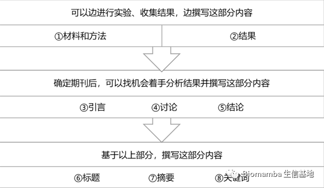
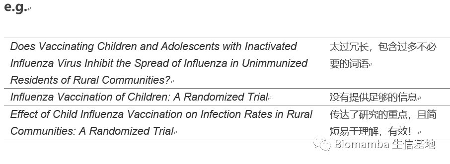
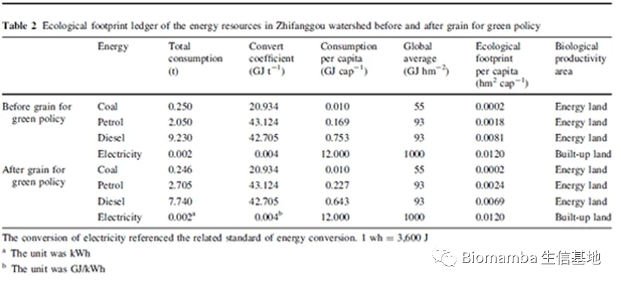
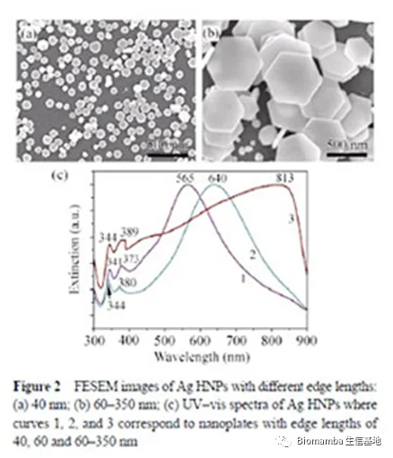
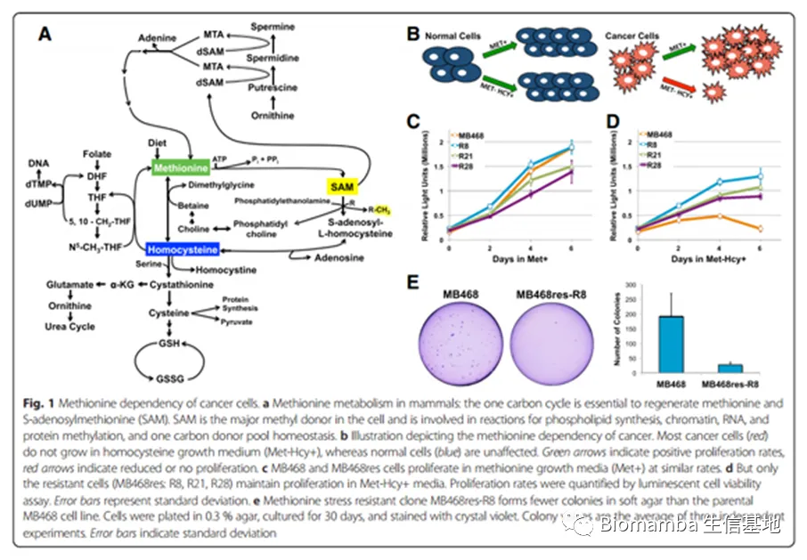
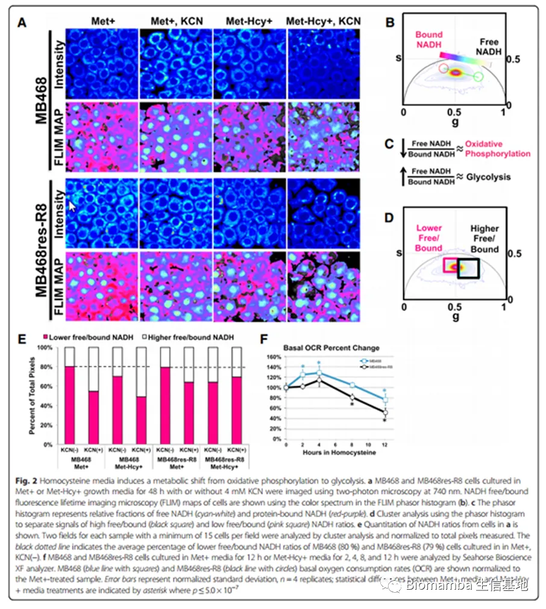
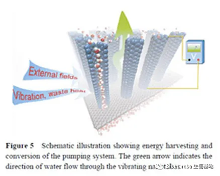
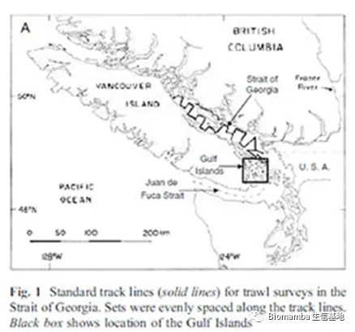

写SCI论文前首先要问自己11个问题
原文：https://mp.weixin.qq.com/s?__biz=MzAwMzIzOTk5OQ==&mid=2247494517&idx=1&sn=c15c4377723454e6cb01239443fc9293&chksm=9b3c9225ac4b1b334cab7a6621525860b622d5a6ebf50f0bbbae82cc86f6aa7a0bdf0a8dba3e#rd 合集：文献速递
最近邮箱里收到来自springer的一封邮件，如题，主要是给投稿人的一些撰文建议。个人觉得很受用，于是就整理了出来，感兴趣的同学也可以看看原文。
01
** **
如何组织稿件？
完成实验后，我们需要动笔成文，将整个研究过程写给别人看。所以论文必须连贯且简洁，通常遵循标准**（IMRaD：introduction-materials and methods-Results-Discussions and Conclusions）** 结构。当然并非所有的期刊文章都遵循IMRaD顺序，但大部分文章结构类似于此。此标准结构提供所有需要再现的研究内容以便作者成文；使文章内容形成逻辑流，方便读者快速精准定位感兴趣的内容。虽然期刊手稿按“标题-摘要-简介-材料和方法-结果-讨论和结论”的顺序发表，但这并不是撰写手稿的最佳顺序。推荐大家按以下顺序撰写手稿，有助于成文合乎逻辑且前后一致：

02
** **
文章标题是否有效？
稿件的标题通常是对作品的第一次介绍，因此有效的标题应：在可以传达文章主要主题的前提下尽量简明扼要，同时能够强调研究的重要性并吸引读者。拟写一个成功的标题很具有挑战性，大家可以尝试这样做：
①列出手稿涵盖的主题，思考为什么该研究会引起其他学者的注意。
②尝试写下一些标题，用尽可能少的词汇将所有主题放在标题中。
③通过上述原则选择合适的标题。
④完善标题：是否通过变换句式能使标题更加吸引人？是否包含有歧义的名词短语？是否突出使用了关键词？是否能够更加简明扼要？

03
** **
摘要应说什么？
摘要可能是部分研究人员在整篇文章中唯一 读到的内容，因此，这部分内容必须独立存在 。多数情况下，在索引数据库（如PubMed）中检索文章时摘要是唯一出现的部分，这也意味着其也是访问量最大的部分。摘要是整篇文章的缩影，好的摘要不仅能为繁忙的研究人员提供省时的捷径，而且有助于加快同行评审过程，吸引读者阅读完整论文。摘要需要包含有关论文的足够信息，在撰写时，应解释清楚以下问题：
①你为什么要做这项研究？（确立文章的脉络推动研究，概述研究的目的）
②你为这项研究做了什么？（提供研究设计、程序和数据分析等信息）
③你发现了什么？（说明研究的结果）
④为什么你的发现很重要？（介绍研究的贡献，强调该研究提出的实践/理论的影响，为未来与此研究相关的探索提出方向）
提示： 在准备摘要时，需遵循正确的期刊稿件格式指南。期刊通常为摘要设置了最大字数（一般为250字），且没有引用，确保在索引时出现完整的摘要内容。
04
** **
应该使用哪些关键词？
关键词是帮助索引器和搜索引擎查找相关论文的工具。有效的关键词可增加稿件的阅读量，并吸引更多的参考和引用。一般我们需通过3-5个简短的词汇突出整篇文章的重点核心内容。关键词有特定的格式，当然每个期刊的要求可能略微不同（如关键词中的标点符号），应根据具体情况调整。有效的关键词应：
①代表文章的内容
②特定于该研究的领域或者子领域。
e.g.
Manuscript title: Direct observation of nonlinear optics in an isolated carbon nanotube
Poor keywords: molecule, optics, lasers, energy lifetime
Better keywords: single-molecule interaction, Kerr effect, carbon nanotubes, energy level structure
Manuscript title: Region-specific neuronal degeneration after okadaic acid administration
Poor keywords: neuron, brain, OA (an abbreviation), regional-specific neuronal degeneration, signaling
Better keywords: neurodegenerative diseases; CA1 region, hippocampal; okadaic acid; neurotoxins; MAP kinase signaling system; cell death
Manuscript title: Increases in levels of sediment transport at former glacial-interglacial transitions
Poor keywords: climate change, erosion, plant effects
Better keywords: quaternary climate change, soil erosion, bioturbation
05
** **
引言包括什么？
引言应为读者提供理解该研究所需的背景信息和进行实验的原因。在撰写这部分内容时，需确保引文：
• Well balanced： 若实验在某个问题上发现了相互矛盾的结果，你是否有同时引用具有这两种结果的研究？
• Current： 尽可能引用10年内的参考文献。但无论是否超过10年，一定要引用第一个发现或提及该研究问题的文章。
• Relevant： 引用的文章应与自己的研究问题密切相关。
一般我们可以这样撰写这部分内容：
①提供背景材料。阐明该研究领域已经建立，回顾以前与该研究主题相关的研究。
②陈述研究问题或疑问。表明现有研究的缺口，提出该文章的研究问题。
③介绍本研究。清晰准确的陈述研究目的（例如，如果已知一种药物在一个人群中效果很好，但从未在另一个人群中进行测试，那么研究的目的可能是测试该药物在第二个人群中的疗效和安全性）
④描述研究过程，展示研究结果，阐述本研究发现的重要性。
提示： 不要在引言中写文献综述，但要引用评论，以便读者可以找到更多信息。
06
** **
如何撰写“材料和方法”部分？
这部分内容为读者提供了该研究的所有详细信息，撰写过程总结如下：
①撰写之前先查看目标期刊的“作者说明”或期刊网站上的样本报告，也可以检索曾发表在该期刊上的论文，了解文章应如何呈现材料和方法。
②使用副标题分隔不同的方法。
③用过去时态 描述该研究过程做了什么并详细说明所有统计测试和参数。简要描述已建立的方法（简单引用读者可以找到更多详细信息的参考资料）；详细描述本研究中采用的新方法以引起读者的重视。
07
** **
结果部分如何呈现？
此部分中只需要说明该研究的发现内容，但不要解释或讨论 其含义。一般情况因注意以下几点：
①使用副标题分隔不同实验的结果。
②应按逻辑顺序显示。不一定按进行实验的顺序撰写，一般可以采用重要性顺序排列，可以尽量与实验方法对应。
③使用过去时态描述结果；用现在时态参考图表。
④切勿在插图、表格和文本之间复制数据。常见的错误是在手稿正文中重新陈述表格中的大部分数据。可以总结读者将在表格中找到的内容或提到一两个最重要的数据点。
⑤呈现统计分析的结果。通常是为统计结果中存在显著差异的地方提供p值。
提示： 有时图像可以比文本更好地解释研究发现。因此，请充分利用手稿中的图形和表格。但也要避免多余的数字和表格（如以不同的格式呈现了相同的内容）；避免文本中只包括信息的情况下使用数字和表格(例如，表格或数字没有足够的数据)。
08
** **
讨论和结论部分该写什么？
讨论和结论部分应该回答这个问题：得出的结果意味着什么？换句话说，“讨论”和“结论”部分的大部分内容应该是对结果的解释。您应该：
①按照最重要到最不重要 的顺序书写讨论和结论。
②查阅筛选可比较的研究，比较 所得结果与其他研究的结果：它们是否一致？若不一致需讨论差异的可能原因。
③尽可能解释研究中出现的不确定的结果 ，可以建议补充其他实验来阐明该结果。
④简要描述研究的局限性 ，向审稿人和读者表明您已经考虑了实验的弱点。这样做清楚地表明了你对研究主题有深入了解且可以客观思考，更有利于给读者留下积极印象。
⑤讨论研究结果对该领域的研究人员、其他领域的研究人员以及公众可能意味着什么，如何应用 该研究结果。
⑥说明研究结果是如何扩展 先前研究的结果的。
⑦如果研究的发现是初步的，可以对未来 需要进行的研究提出建议。
⑧在“讨论”和“结论”部分的末尾，再次陈述主要结论 。
09
** **
是否应该用图形和表格显示一些数据？
某些信息很难用文本解释，图形和表格是传达大量复杂信息 的最快方式。许多读者习惯只查看 展示项目不阅读手稿正文，所以确保展示项可以独立 于文章且能清楚传达重要结果尤为重要。此外，高质量的专业展示项会增加该研究的说服力，吸引读者去阅读完整文章。在决定将哪些结果作为展示项时，请考虑以下问题：
①是否有什么数据是读者可能更愿意以显示项的形式去理解的。
②数字是否是对文本的补充，而不是重复已陈述的内容。
③是否把数据放进易用文本解释的表格中，比如简单的统计数据或p值。
- 表格
表格可以简洁有效的呈现大量数据，设计好可以清楚地将结果传达给繁忙的研究人员。下面是一个设计良好的表的示例：
•图例/标题清晰而简洁
•对数据进行合理分类
•列和行间距足够
•写明单位
•字体类型和大小清晰可辨

来源：环境地球科学 （2009） 59：529–536
- 图像
某些内容通常很难用文字进行充分描述，图像可帮助读者可视化文章中试图传达的信息，实现手稿的科学性和准确性。例如，只说“表面具有纳米级特征”不够具象化，这种情况下就最好提供显微镜图像。对于图像，应：
•包括比例尺
•考虑为重要商品贴标
•指明所用不同颜色和符号的含义
- 数据图
数据图通常用来显示两个或多个项目之间的功能或统计关系，一般会省略有关各个数据点的详细信息以强调点集合所显示的关系。请确保数据图：
•标记所有轴
•指定数量单位
•标记所有曲线和数据集
•使用清晰易读的字体大小

来源：纳米研究 （2010） 3：843–851


资料来源：博雷戈等人。癌症 & 新陈代谢 （2016） 4：9
- 原理图
原理图有助于识别系统或过程的关键部分，可用于具象化很难或不可能捕获图像的情况。应仅突出显示 关键元素，避免添加不重要的项目而造成图像混乱。对于原理图，请务必：
•标记关键项
•在标题和正文中提供补充说明
下面是一个解释如何使用纳米管从流体中收集能量的示意图：

来源：纳米研究 （2011） 4：284–289
- 地图
地图对于将外业工作置于执行工作位置的上下文中非常重要。一个好的地图将帮助读者了解该站点如何影响您的研究，方便其他研究人员重现您的工作或找到具有类似属性的其他位置。地图应：
•包括纬度和经度
•包括比例尺
•为重要项目贴标签
•考虑添加地图图例
在这里，我们有一张用于鲑鱼研究的地图：

来源：鱼类环境生物学 （2011） DOI：10.1007/s10641-011-9783-5
提示：
①考虑您的图像在印刷版和在线版中的外观。72 ppi 的分辨率足以用于在线出版，而在印刷时建议使用 100 ppi。可在保存文件时使用用于创建图形的原始程序中调整图形的分辨率。
②提示：有两种主要的颜色模型;RGB代表红色，绿色，蓝色和CMYK或青色，品红色，黄色和黑色。大多数显微镜将使用RGB拍摄图像，但是CMYK是用于打印的标准，因此检查您的图形是否以这种格式显示良好非常重要。
注意：
①在将图表提交到期刊前只对图表进行最低限度 的处理，不可以试图通过“修饰”图像来改善结果，应保证其真实地代表原始图像文件。只有在对所有图像（包括对照）进行平等应用时才可调整图像的亮度或对比度，例如在荧光显微镜的使用。
②为了显著提高图像的简洁性或清晰度，可以酌情对图像进行裁剪，但是应确保裁剪不排除 任何必要信息，例如电泳凝胶中的分子标记。
③应说明所使用的任何处理软件。
④保留用于创建图表的原始图像、文件和元数据的副本，有些期刊会有相关要求。
10
** **
致谢部分该如何组织？
相信当我们的科研进行到致谢这一步，您一定感慨万分。这部分内容重要的就是表达自己的真情实感 。当然，就内容来说一般包括三部分：
①简单总结自己在整个研究及写作过程中的学习生活经历以及感悟。
②查看期刊的《作者说明》，确定谁应该被考虑列为作者。然后在致谢中对其余对这项研究有帮助的人进行真诚的感谢。
③也可以描述自己对未来的展望。
11
** **
如何规范书写参考文献
文章中的每个事实陈述的引用都应该标注参考文献。不同的期刊对参考文献格式的要求也有差异，应提前查看相关文件确定标准格式，注意以下几点：
• 标点符号（注意中英文标点的全角/半全角问题）
• 空格（不能多/少）
• 斜体（有些期刊会要求特定的名称如期刊名用斜体）
• 要求完整写明的作者数量
• 编号的格式
• 不同参考文献类型有不同的格式要求，注意区分
参考：
https://www.springernature.com/gp/researchers/the-source/blog/blogposts-getting-published/11-questions-to-ask-yourself-as-you-write-your-manuscript/16628142?sap-outbound-id=DF8FA0A7FB2B925AAA52ED2BB7933FEC64524EFC&utm_source=hybris-automated&utm_medium=email&utm_campaign=000_JBS9530_0000024773_CONR_JRNLS_DEC1_PMLS_APSPR_SUBM_RC_4&utm_content=EN_internal_46334_20220929&mkt-key=42010A0D55441EECA9D904D46E984EBA

如何联系我们
 公众号后台消息更新不及时，超过48h便不允许回复读者消息，这里给大家留一下领取资料、免费服务器的微信号 ，方便各位随时交流、提建议（由助理接待）。此外呼声一直很高的交流群 也建好了，欢迎大家入群讨论：永久免费的千人生信、科研交流群
公众号后台消息更新不及时，超过48h便不允许回复读者消息，这里给大家留一下领取资料、免费服务器的微信号 ，方便各位随时交流、提建议（由助理接待）。此外呼声一直很高的交流群 也建好了，欢迎大家入群讨论：永久免费的千人生信、科研交流群
大家可以阅读完这几篇之后添加给生信入门初学者的小贴士 如何搜索公众号过往发布内容

 您点的每个赞和在看，我都认真当成了喜欢
您点的每个赞和在看，我都认真当成了喜欢